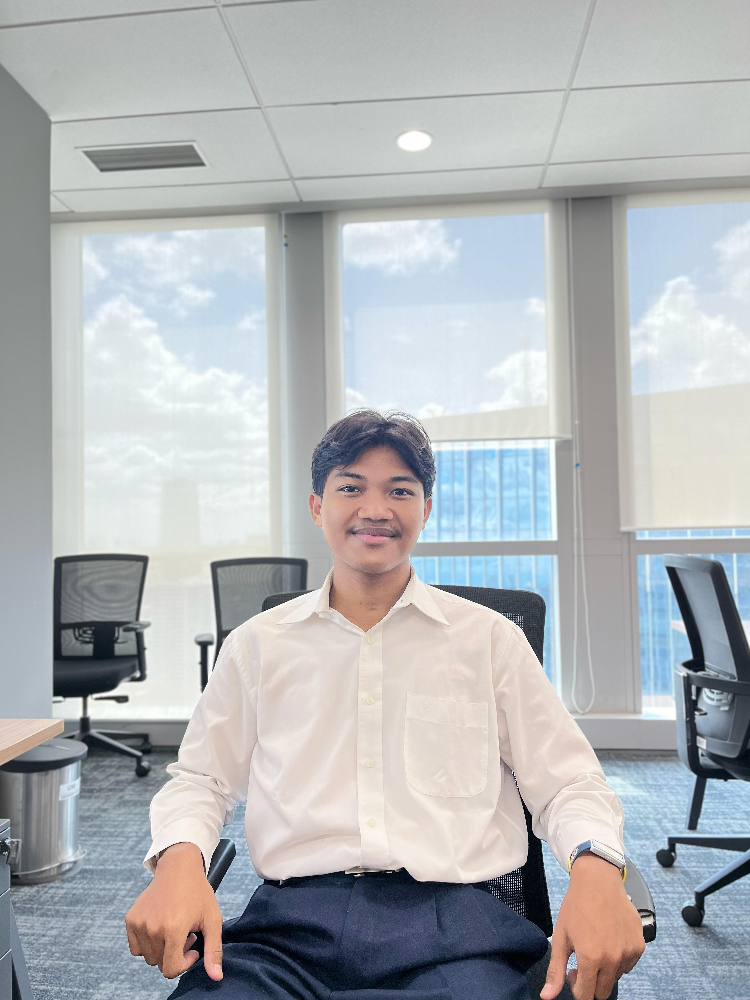
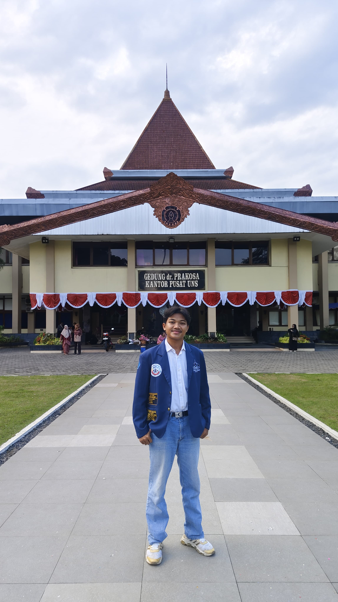
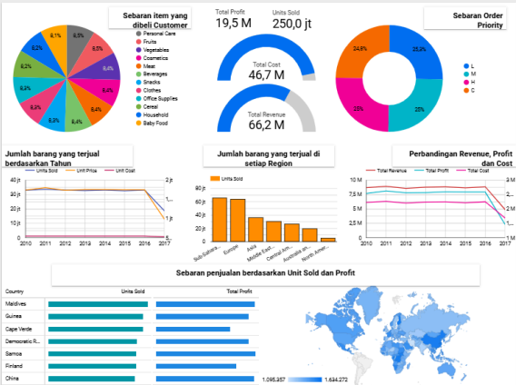
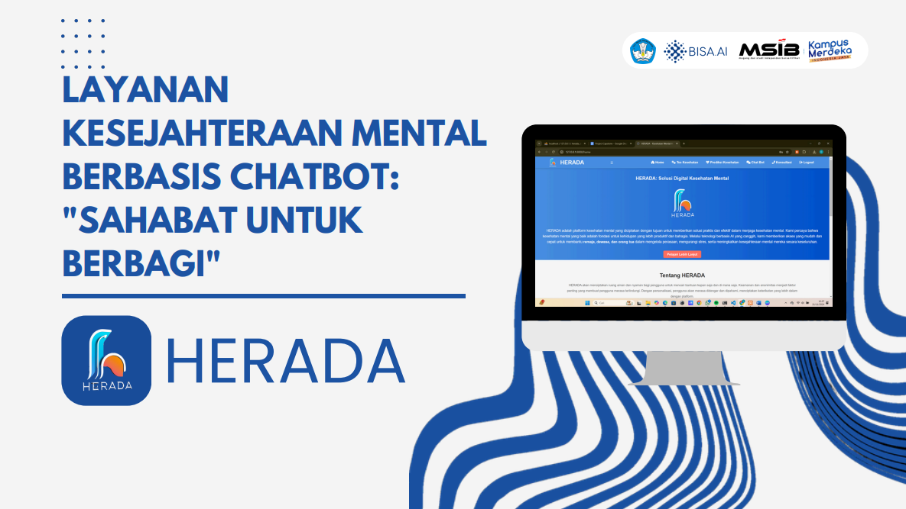
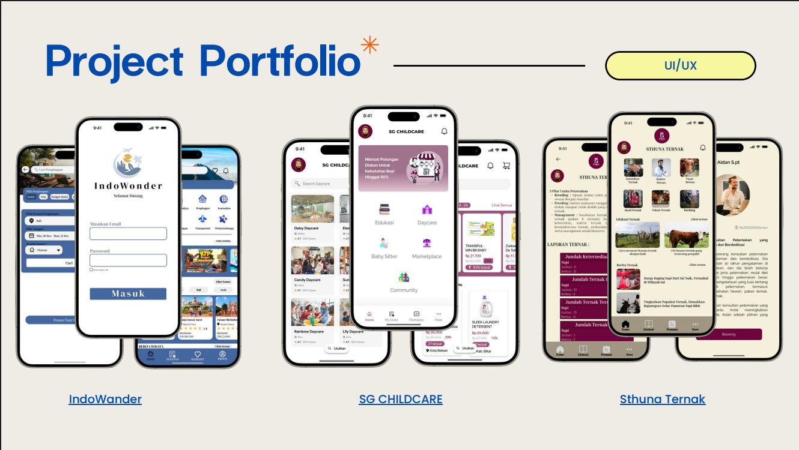
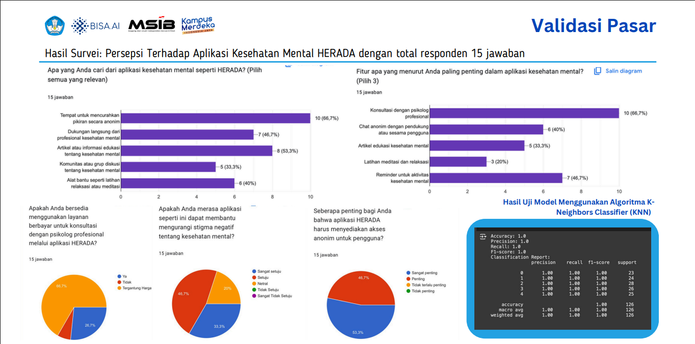
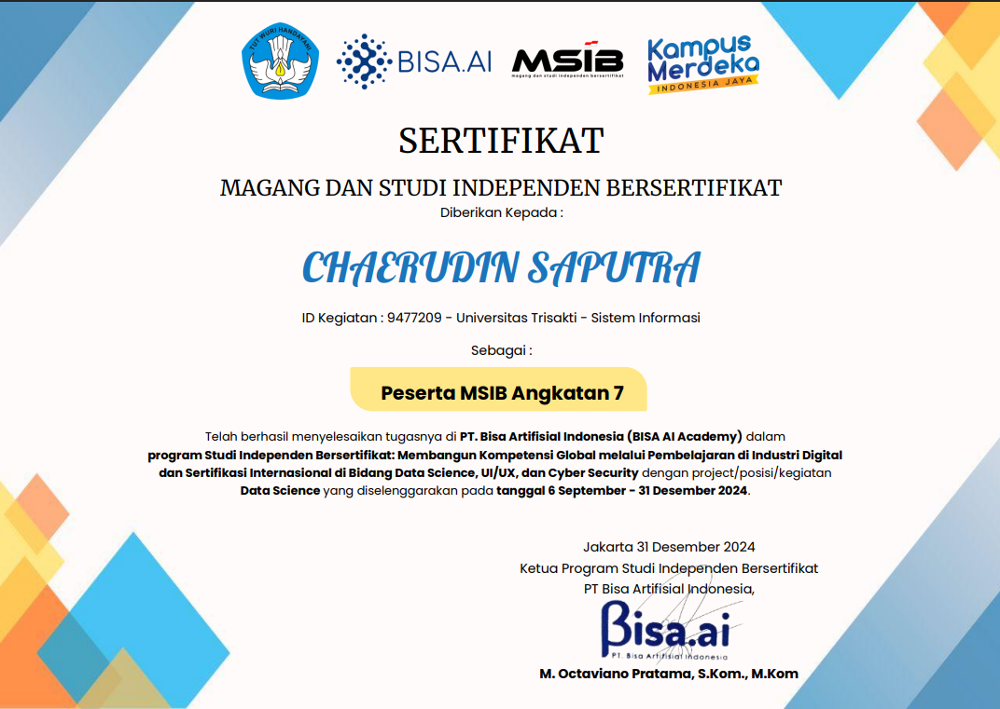
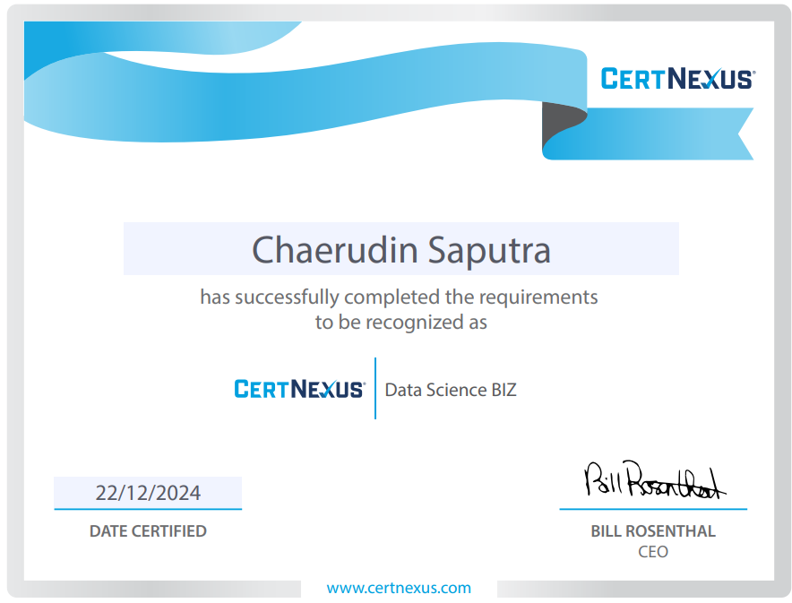

×


Passionate about creating data driven solutions and mitigating contractual & counterpart risks.

I am a sixth-semester Information Systems undergraduate student at Trisakti University, maintaining an exceptional GPA of 3.93/4.00. With a strong foundation in data analysis, teamwork, and leadership, I excel in creating data-driven solutions and have developed a keen interest in risk assessment.
Current Position
September 2024 - December 2024
March 2024 - July 2024
August 2022 - Present
February 2024
July 2024 - Present
May 2024 - Present
February 2023 - November 2023
January 2024 - September 2024
November 2021 - January 2024
Focused on data analytics, information management, and system development. Taking specialized courses in database management, data warehousing, and business intelligence.

Comprehensive dashboard using Google Looker that provides real-time insights into revenue trends, product performance, and customer behavior patterns.
View Project
Interactive chatbot utilizing Gemini AI API to provide mental health support and resources. The bot can identify emotional distress signals and offer appropriate responses.
View Project
Designed and developed multiple platforms including:

SVM-based machine learning model predicting heart health risks based on patient data, achieving 70% accuracy and providing valuable insights for early intervention.
View ProjectBisa AI Academy, 2024

CertNexus, 2024

I'm always open to discussing new projects, creative ideas, or opportunities to be part of your vision. Feel free to reach out through any of these channels: